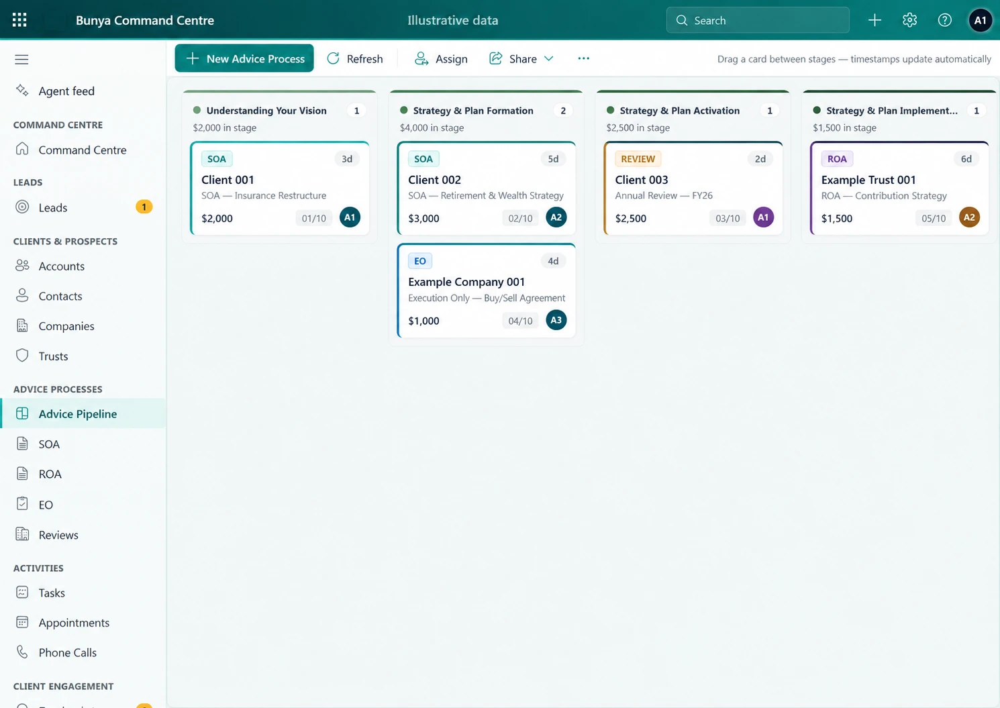
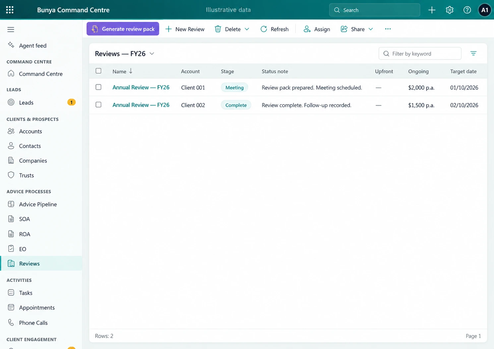
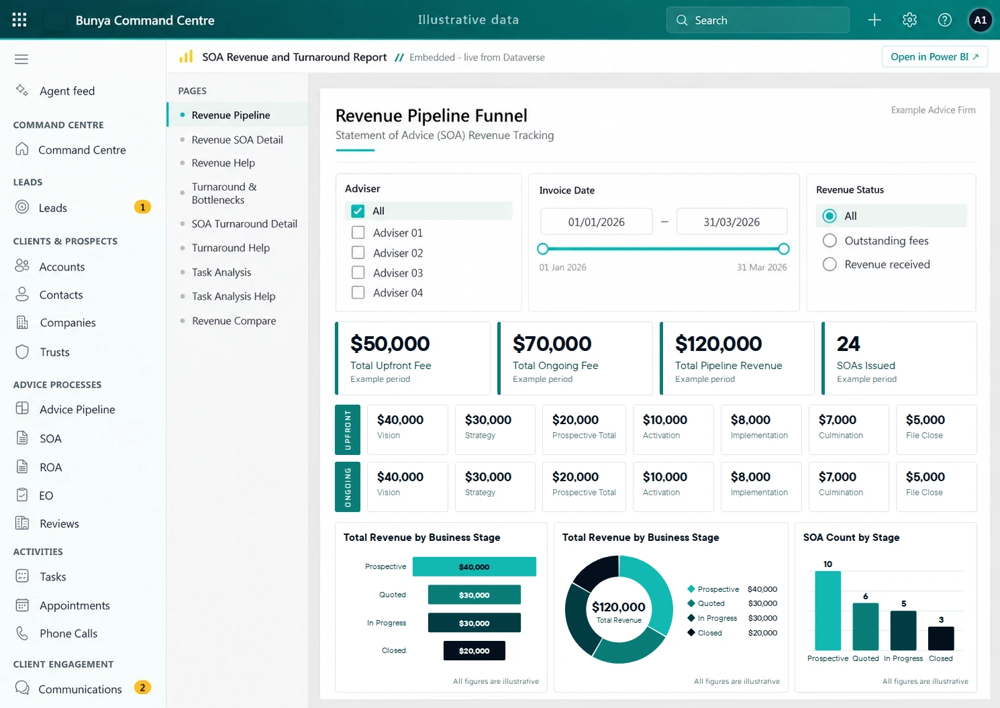

Keep the context together.
Give the next person the client history and relevant work, without rebuilding the story.
BUILT FOR AUSTRALIAN FINANCIAL ADVICE FIRMS
Bunya brings client relationships, advice workflows and reviews into one Command Centre—with AI working alongside your team.
Built around your firm. In your Microsoft environment.
Start here every morning
You have one front door for client priorities, advice work, reviews, and activity due.
Your day
Already at work in
Australian advice firms


THE WORK BETWEEN THE SYSTEMS ADDS UP.
Give the next person the client history and relevant work, without rebuilding the story.
Use connected information and AI skills to prepare drafts and proposed actions for review.
Shape workflows and access around your team, in your firm’s Microsoft environment.
MEET COMMAND CENTRE
Command Centre is Bunya’s core product. Bring the client record, the work and the next action into the same view.
Bring active work, upcoming meetings and client context into view. Open the record behind the next action.
Explore Command Centre ↗Recreated interface · illustrative data



THE CORE. AND EVERYTHING CONNECTED TO IT.
Command Centre sits at the heart. Connect the conversations, capabilities and Microsoft tools that support the work.
 Command CentreAI layer
Command CentreAI layerYour client context. Your firm’s workflows.
EXTEND YOUR REACH
Broadcast HQ connects campaign creation, review and supported publishing.
Explore Broadcast HQ ↗
KEEP THE CONVERSATION CONNECTED
Bunya Voice connects supported calls and meetings to client work and follow-up.
Explore Bunya Voice ↗BUILT AROUND YOU
Bunya is delivered in your firm’s Microsoft environment. Shape the workflows and roles around the way your team operates.
Your agreement defines the components, rights and handover. Microsoft licences, usage and ongoing services remain part of the cost picture.
Understand the model ↗CONFIDENCE IN THE MOVE
Define the workflows, connections, responsibilities and costs before the build.
Prove representative scenarios and the migration approach with your people.
Use client video tutorials, practical tasks and agreed support to make the move.

YOUR NEXT CHAPTER STARTS WITH ONE WORKFLOW.
Explore Command Centre with example data, or talk through your priorities.